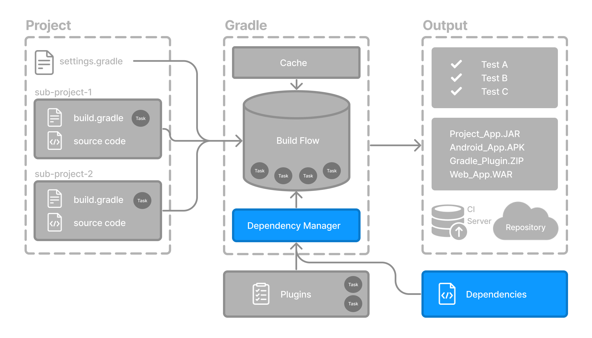

Gradle has built-in support for dependency management.

Dependency management is an automated technique for declaring and resolving external resources required by a project (i.e., dependencies).
Dependencies include JARs, libraries, or source code that support building your project. They are declared in build scripts.
Gradle automatically handles downloading, caching, and resolving these dependencies, saving you from managing them manually. It also handles version conflicts and supports flexible version declarations.
Declaring Your Dependencies
To add a dependency to your project, specify a dependency in the dependencies {} block of your build.gradle(.kts) file.
The following build.gradle(.kts) file adds two dependencies to the project:
plugins {
id("java-library") (1)
}
dependencies {
implementation("com.google.guava:guava:32.1.2-jre") (2)
api("org.apache.juneau:juneau-marshall:8.2.0") (3)
}plugins {
id("java-library") (1)
}
dependencies {
implementation("com.google.guava:guava:32.1.2-jre") (2)
api("org.apache.juneau:juneau-marshall:8.2.0") (3)
}| 1 | Applies the Java Library plugin. |
| 2 | Adds a dependency on Google’s Guava library used in production code. |
| 3 | Adds a dependency on Apache’s Juneau Marshall library, used in library code. |
Dependencies in Gradle are grouped by buckets called configurations, which define when, where, and how the dependency is used. Configurations define the scope of your dependencies. In the example above:
implementationis used for dependencies needed to compile and run your production code.apiis used for dependencies that should be exposed to consumers of your library.
When you apply certain plugins, Gradle automatically creates the right configurations for your project and makes them available to use.
For example, applying java or java-library adds configurations like implementation, api, compileOnly, runtimeOnly, and testImplementation so you can declare dependencies in the right place without extra setup.
The Android Gradle Plugin (AGP) adds variant-aware configs like debugImplementation, releaseImplementation, androidTestImplementation, and even per–build-type/flavor ones like freeDebugImplementation.
Kotlin Multiplatform (KMP) creates source set–scoped configs such as commonMainImplementation, commonTestImplementation, androidMainImplementation, iosArm64MainImplementation, etc.—so you depend exactly where the code runs.
Viewing Project Dependencies
You can inspect the dependency tree using the dependencies task.
For example, to view the dependencies of the :app project:
$ ./gradlew :app:dependenciesGradle will output the dependency tree, grouped by configuration:
$ ./gradlew :app:dependencies> Task :app:dependencies
------------------------------------------------------------
Project ':app'
------------------------------------------------------------
...
runtimeClasspath - Runtime classpath of source set 'main'.
+--- org.apache.juneau:juneau-marshall:8.2.0
| \--- org.apache.httpcomponents:httpcore:4.4.13
\--- com.google.guava:guava:32.1.2-jre
+--- com.google.guava:guava-parent:32.1.2-jre
| +--- com.google.code.findbugs:jsr305:3.0.2 (c)
| +--- org.checkerframework:checker-qual:3.33.0 (c)
| \--- com.google.errorprone:error_prone_annotations:2.18.0 (c)
+--- com.google.guava:failureaccess:1.0.1
+--- com.google.guava:listenablefuture:9999.0-empty-to-avoid-conflict-with-guava
+--- com.google.code.findbugs:jsr305 -> 3.0.2
+--- org.checkerframework:checker-qual -> 3.33.0
\--- com.google.errorprone:error_prone_annotations -> 2.18.0Using a Version Catalog
A version catalog provides a centralized and consistent way to manage dependency coordinates and versions across your entire build.
Instead of declaring versions directly in each build.gradle(.kts) file, you define them once in a libs.versions.toml file.
This makes it easier to:
Share common dependency declarations between subprojects
Avoid duplication and version inconsistencies
Enforce dependency and plugin versions across large projects
The version catalog typically contains four sections:
[versions]to declare the version numbers that plugins and libraries will reference.[libraries]to define the libraries used in the build files.[bundles]to define a set of dependencies.[plugins]to define plugins.
Here’s an example:
[versions]
guava = "32.1.2-jre"
juneau = "8.2.0"
[libraries]
guava = { group = "com.google.guava", name = "guava", version.ref = "guava" }
juneau-marshall = { group = "org.apache.juneau", name = "juneau-marshall", version.ref = "juneau" }Place this file in the gradle/ directory of your project as libs.versions.toml.
Gradle will pick it up automatically and expose its contents through the libs accessor in your build scripts.
IDEs like IntelliJ and Android Studio will also pick up this metadata for code completion.
Once defined, you can reference these aliases directly in your build file:
dependencies {
implementation(libs.guava)
api(libs.juneau.marshall)
}dependencies {
implementation(libs.guava)
api(libs.juneau.marshall)
}Next Step: Learn about Tasks >>